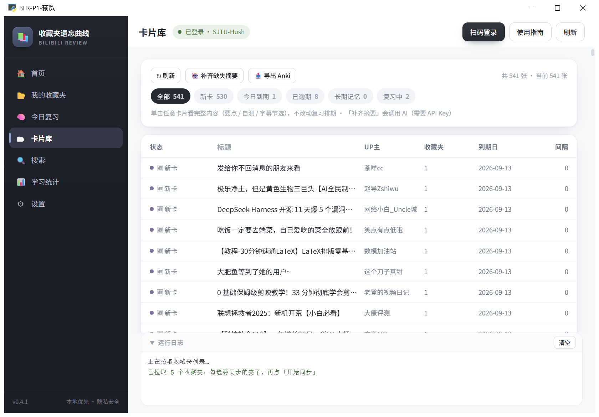

实拍截图
首页 —— 今日待复习数量与四步上手引导
它解决什么
点收藏只制造了「我学过了」的错觉。真正形成记忆的是主动回忆加间隔重复,但收藏夹只是个越攒越长的列表,从不会提醒你该回来看。
怎么做的
同步收藏夹 → 拉取字幕 → LLM 生成复习卡片 → 遗忘曲线到期提醒 → 主动回忆评分 → 全文检索。用 SM-2 简化算法为每张卡片排复习时间:记得牢就隔久一点,忘了就明天再见。
关键数字
541
已同步收藏视频
来自真实使用截图
539
今日待复习卡片
新卡 530 / 复习 9
529
已生成卡片
摘要在跑
8 条/次
批量摘要合并调用
省请求省成本
功能
- 遗忘曲线复习 —— 新卡先读内容后评估,复习卡先回忆再看答案,按忘了/模糊/记得自动排下次时间。
- 摘要三档全覆盖 —— 有字幕精摘 / 无字幕批量轻摘(8 条/次合并调用)/ 无信息零 AI 兜底。
- 增量同步不重复 —— 三段式断点续跑,单视频失败不炸全程,增量永不重复生成。
- 卡片库与统计 —— 全部卡片的书架,状态徽章 + 筛选;未来 7 天到期分布 + 近 14 天活跃度。
- 全文检索 —— FTS5 trigram 中文子串搜索标题/简介/字幕/摘要,LIKE 兜底。
- Anki 导出 —— 一键导出 .apkg 牌组,按 BV 号稳定去重,可反复导入。
- 键盘快捷键 —— 空格显示答案 / 1-2-3 评分 / S 跳过,支持评分撤销。
- 演示模式 —— demo 内置 4 张卡片,不登录不花钱即可体验全流程。

实拍截图
复习页 —— 新卡先自读内容再评估

实拍截图
卡片库 —— 全部卡片的书架,状态徽章与筛选

实拍截图
学习统计 —— 到期分布与复习活跃度

实拍截图
搜索 —— FTS5 trigram 中文子串全文检索

实拍截图
扫码登录 —— cookie 只存本机
工程细节
界面已重构为本地 WebUI + 独立 exe 分发,无需 Python,安装器一键升级。
Windows Toast + 可选 Server酱微信推送;每日首次使用自动备份数据库,保留最近 7 份。